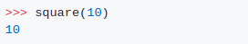

Output (Python 2.x):
답이 왜 100이 아닐까요?
정보: 복사-붙여넣기가 불가능하다면 shell에서 mixed_tabs_and_spaces.py 파일을 실행하세요.
설명:
탭과 공백을 섞어서 입력하지 마세요! 예시에서 볼 수 있듯 return 앞에 와야 할 문자는 탭이고, 코드는 4개의 공백으로 들여씁니다.
다음은 파이썬이 탭을 다루는 방법입니다.
탭은 다음 문자까지의 총 문자 수가 8의 배수가 되도록 1개에서 8개 사이의 공백으로 대체됩니다.
square 함수의 마지막 줄에 들어가는 탭은 8개의 공백으로 대체되고, 무한루프를 유발합니다.
파이썬 3은 이러한 에러를 스스로 인식하여 알려줍니다.
Output (Python 3.x):